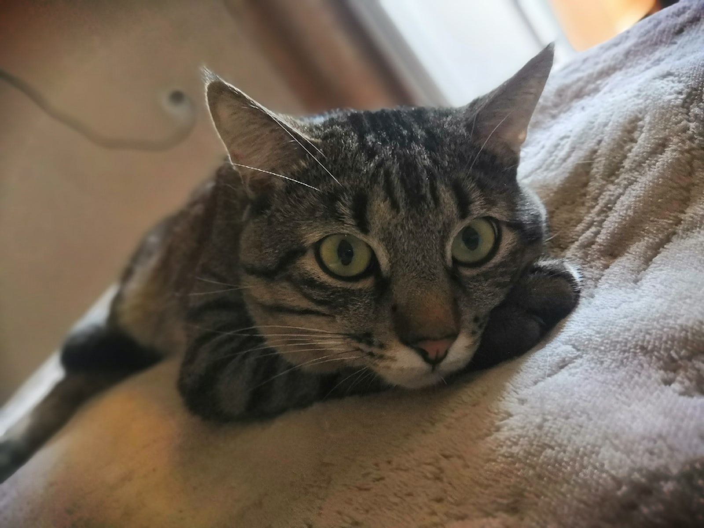
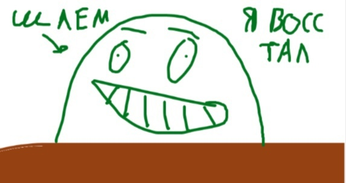
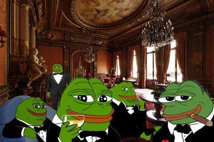

О себе

Меня зовут Михаил Щербаков и это моя страница для лабораторной работы. Я учусь на 4 курсе по направлению "информатика и вычислительная техника". Вот ссылка на страницу моего ВУЗа.
Я у меня етсь ютуб канал который никому не нужен. Люблю играть в компьютерные игры и котиков.
О котов будет многа.
Email: stylemiha145@gmail.com
К содержанию
О Паше

Меня зовут Павел, фамилиия Шепелев, отчество Геннадьевич. Я учусь на 4 курсе по направлению "Информатика и вычислительная техника".
страница создана для лабораторной работы. Кому интересно, вот ссылка на мой Вуз
Что могу сказать про свои увлечения, я люблю готовить, играть в компьютерные игры, футбол, баскетбол и волейбол.
Моя будующая профессия программист, надеюсь что получу диплом и после армии пойду работать по профессии.
Email: pasha.terminator007@mail.ru
К содержанию
О группе

Мы учимся в группе 220681. Наша группа учится по специальности "программное обеспечение вычислительной техники и автоматизированных систем" (ПОВТИАС).
В наше группе учатся 32 человека.
До этого года куратором нашей группы был Берсенев Геннадий Борисович, но с этого года куратором стала Демидова Анастасия Владимировна.
Старостой нашей группы - Хохряков Даниил.
К содержанию